Eroded terrain
Rivers carve valley networks, droplets cut gullies and scree piles below cliffs, all simulated on the GPU in a few seconds.
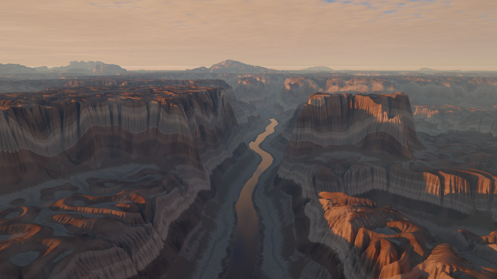
Lithosky is a free landscape studio that runs on your computer. Eroded mountains, canyon country, luminous skies and real clouds, path traced on your GPU.
Every image here is one of the built-in scenes, rendered by the app itself. Open any of them in the studio and make it yours.
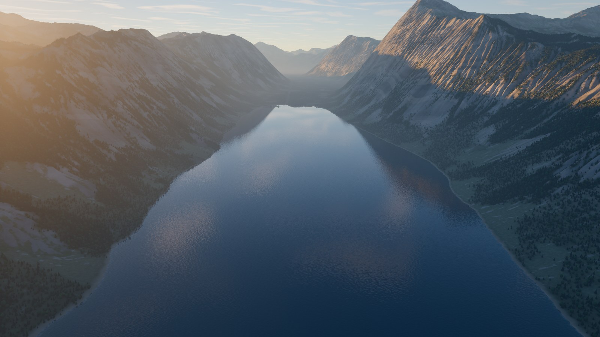
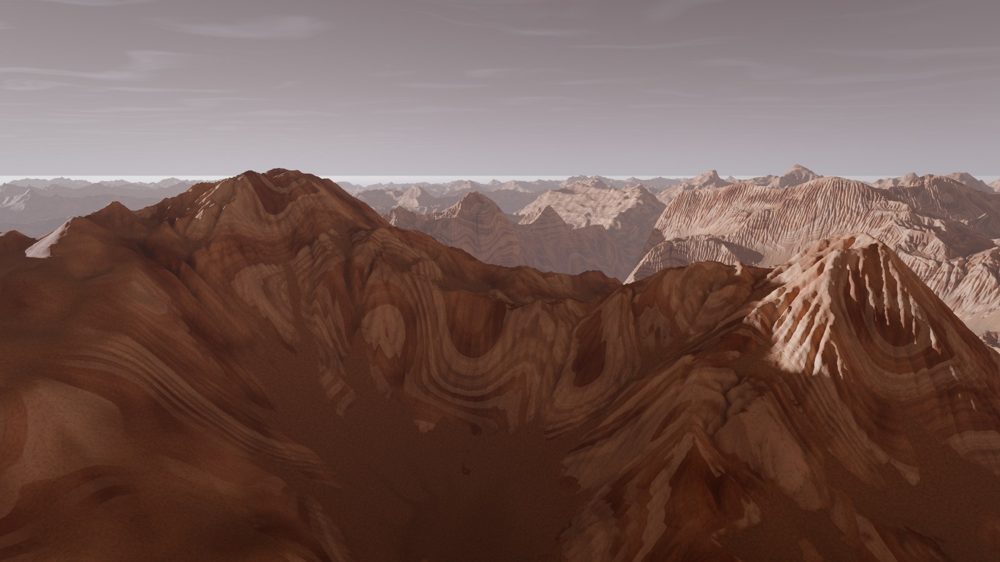
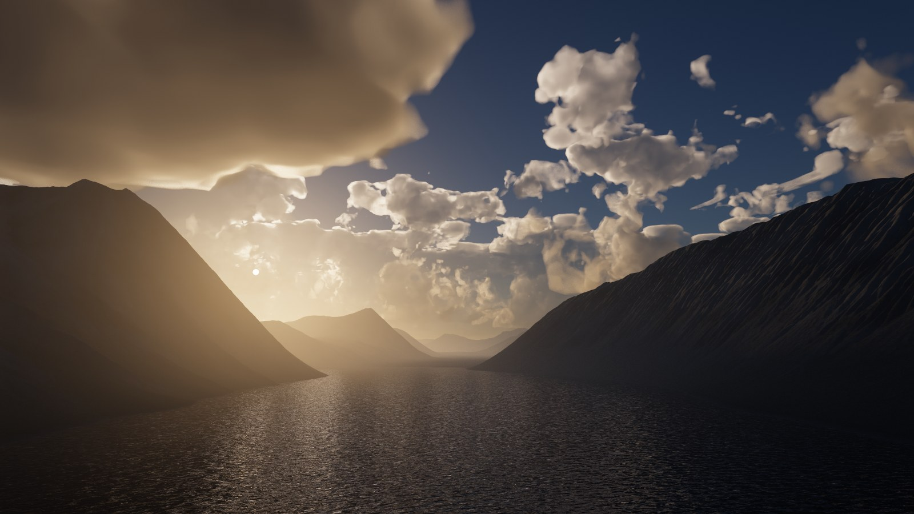
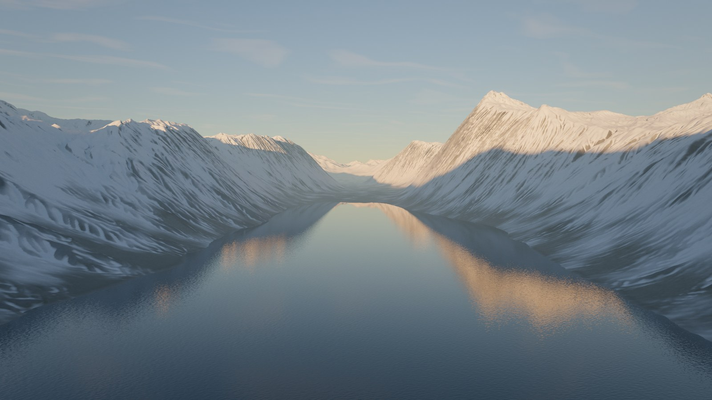
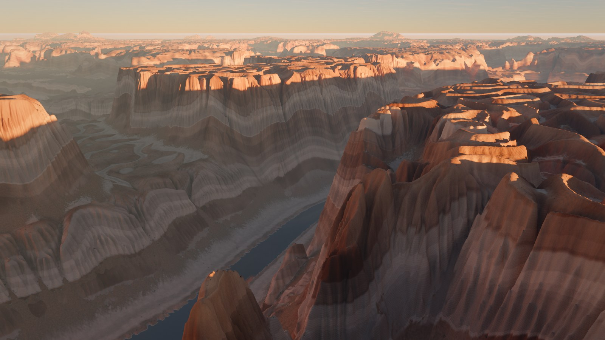
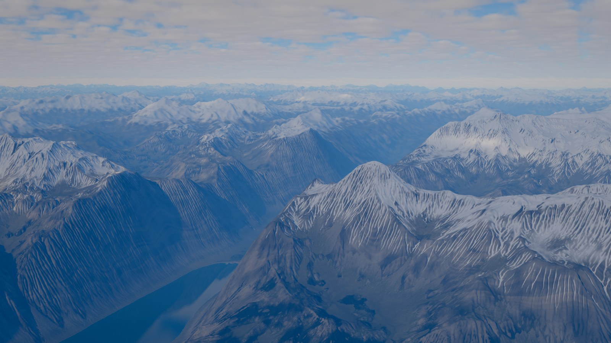
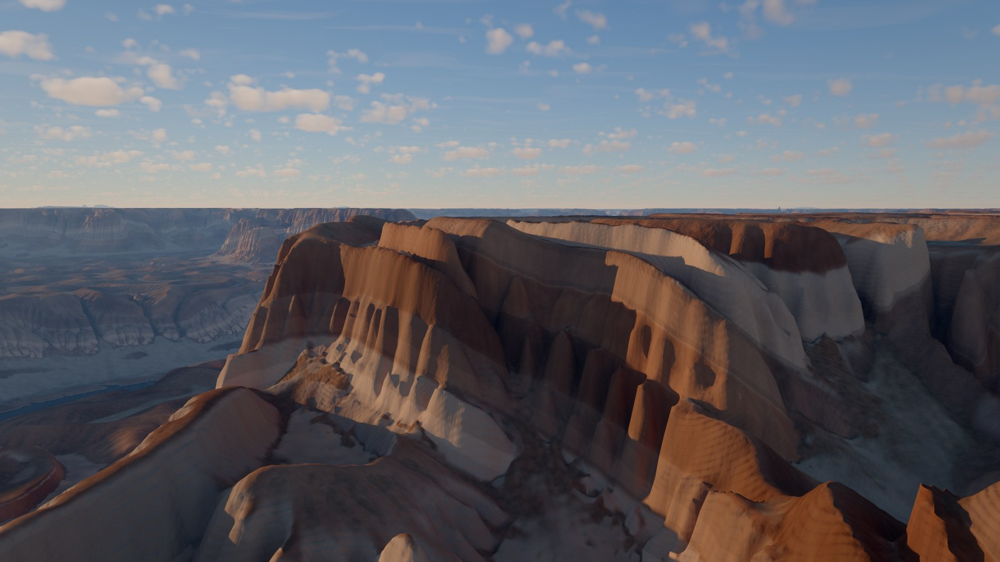
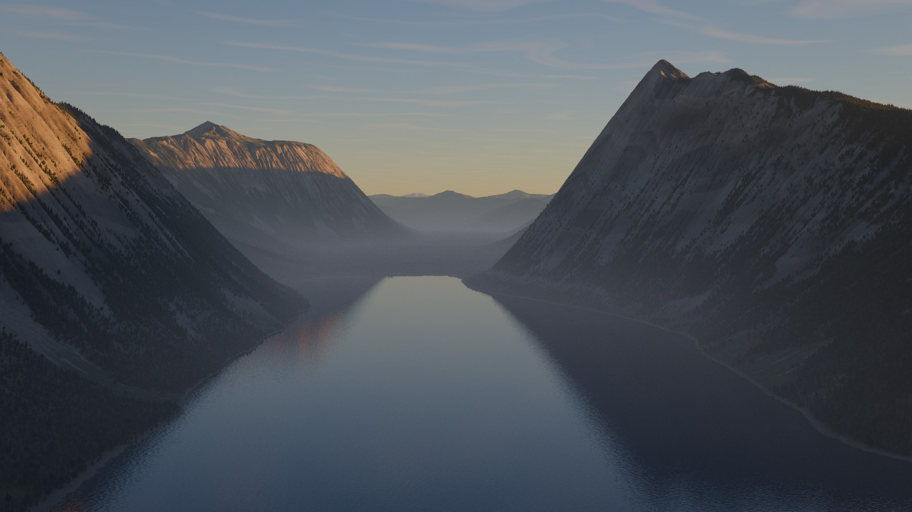
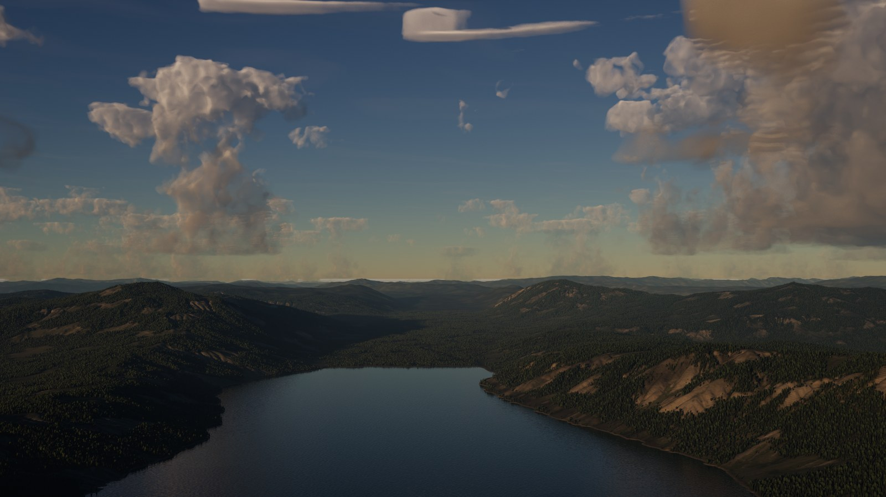
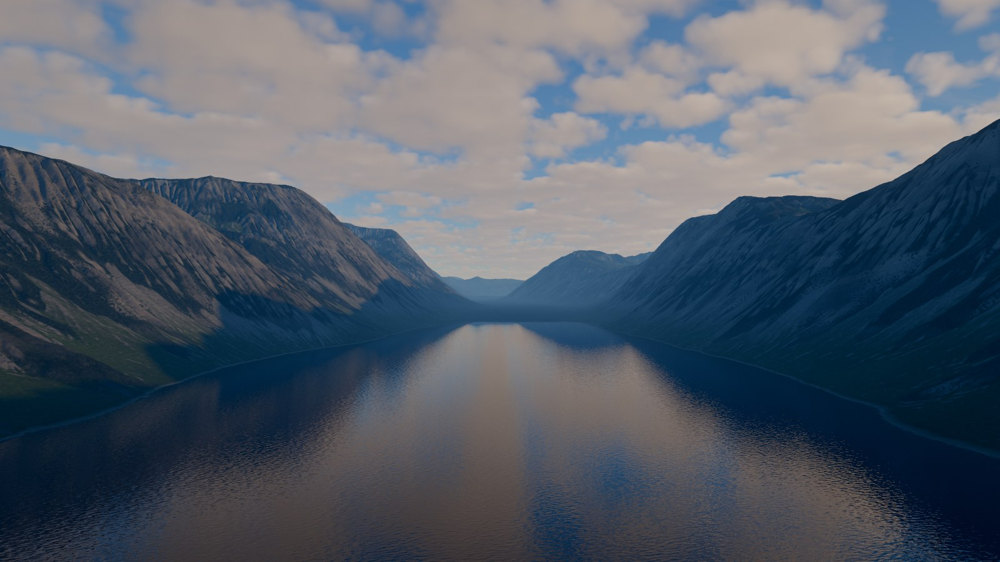
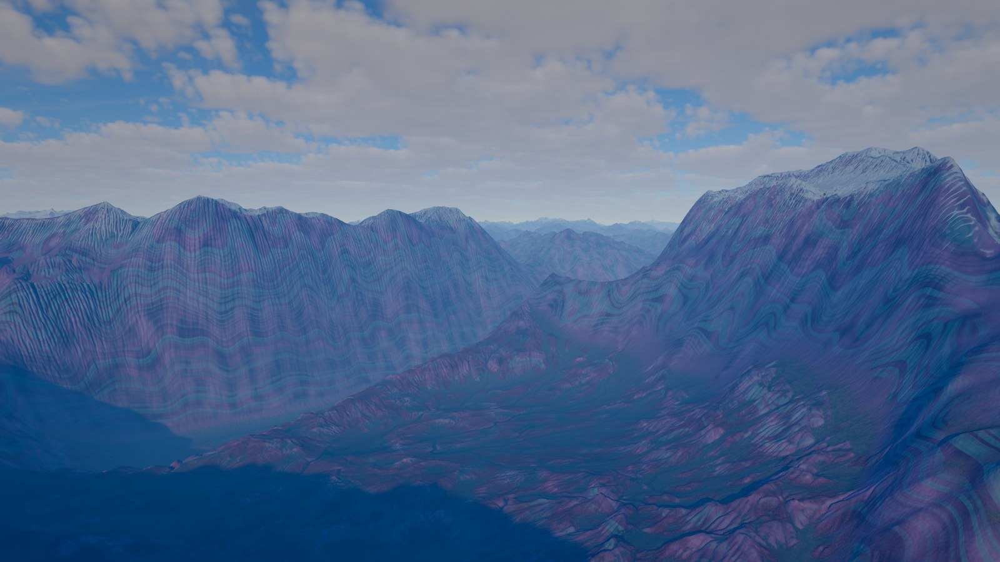
The picture fills the window. Eight labs open beside it: scenes, terrain, light, sky, ground and water, plants, camera and image. Each starts with a gallery that shows your own view with every choice applied, rendered live.
Drag any value to adjust it. Drag the sun across a sky dome, or point at the sky to put it there. Press Render and watch the final image refine in place.
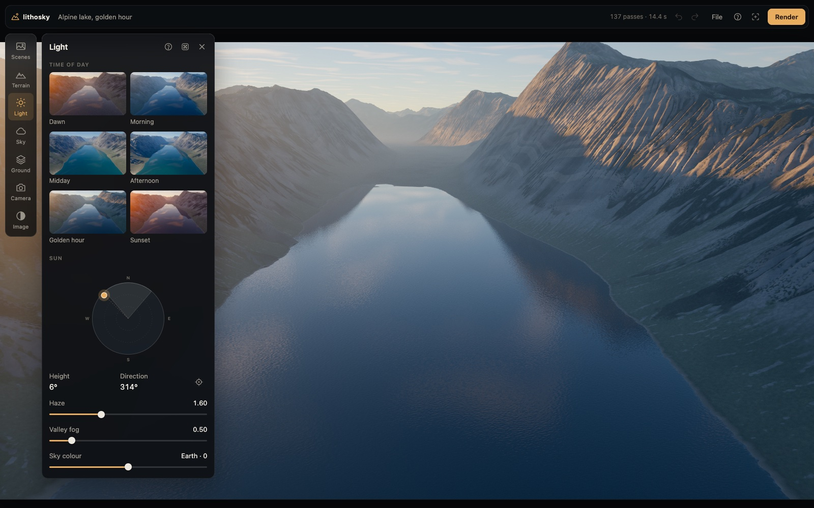
Rivers carve valley networks, droplets cut gullies and scree piles below cliffs, all simulated on the GPU in a few seconds.
Plateaus break into mesas and buttes, and every slope steps into cliffs and ledges banded by its rock layers.
Sunlight scatters through the atmosphere, haze softens distant ridges, and the air's colour can run from deep blue to an alien gold.
Volumetric clouds from fair-weather heaps to storm towers with anvils. They glow at the edges, cast shadows and show in the water.
Rock, scree, meadow, forest, sand and snow go where the landform puts them. Lakes reflect the sky and ripple in the wind.
One small program, no account, no telemetry and nothing downloaded at run time. Your scenes stay on your computer.
Lithosky runs on macOS, Windows and Linux (Intel and ARM). It needs a recent Chromium-family browser (Chrome, Edge, Brave or Chromium) with WebGPU and graphics acceleration; the browser draws the window.
curl --proto '=https' --tlsv1.2 -fsSL https://raw.githubusercontent.com/robert-mcdermott/lithosky/main/install.sh | shirm https://raw.githubusercontent.com/robert-mcdermott/lithosky/main/install.ps1 | iexThe installer fetches the program for your computer, checks it against the release's
published checksums, and installs it for you alone, with no admin rights needed.
Then run lithosky.
Lithosky is free and open source under the Apache 2.0 licence. Programs aren't signed with an Apple or Microsoft certificate yet; the installers check every download against its published checksum instead.